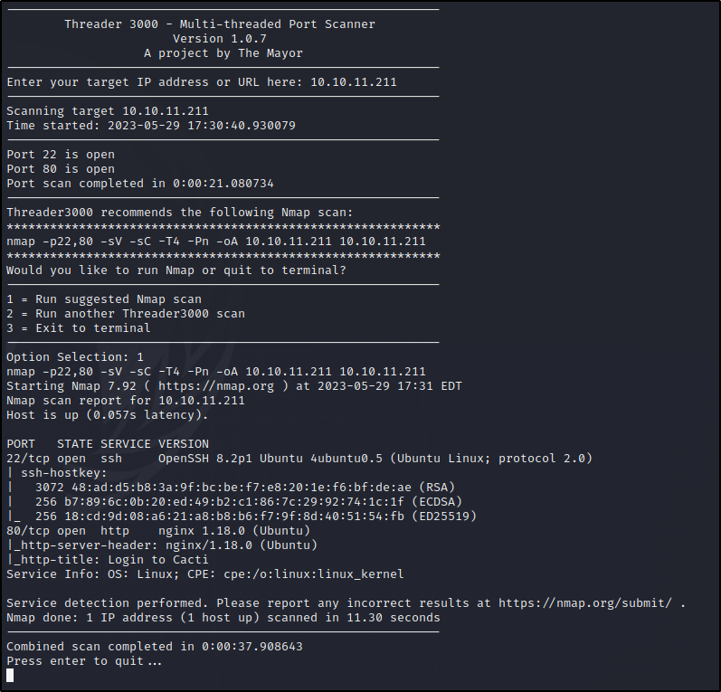

First let's start off by scanning for open ports.

Heading over to port 80 we find a login page that also tells us which version # is running.

Let's look for an exploit...

Let's use this exploit [] since it works right out of the box...
we can either ` git clone https://github.com/FredBrave/CVE-2022-46169-CACTI-1.2.22.git ` or

copy the code and save it to a new file `exploit.py`

Start a netcat listener

Now lets trigger the exploit

and if we check our netcat listener we see we have a shell.

Let's run linPEAS and see if we can find anything interesting


`/sbin/capsh` has the SUID bit set.. Let's go check out [gtfobins.github.io]

`/sbin/capsh --gid=0 --uid=0 --`

we are root.... But i believe we are stuck inside of a docker container

So lets break out!!!
some other info from linpeas


`mysql --host=db --user=root --password=root cacti -e 'show tables'`

Ok let's look inside user_auth.
`mysql --host=db --user=root --password=root cacti -e 'select * from user_auth'`

And we find a couple hashes along with names and emails.. Maybe we can crack the hashes and get the passwords...

well that was easy... Now we have Marcus's password wonder if we can log in.

Looks like we are inside docker containers....
Lets grab the user.txt flag.

Ok let's check what version of docker is running

Any exploits?? Let's check it out..

Here is the readme.md for this exploit...

Again we will just copy the raw file and paste into a new file called `test.sh` to test this out.

First let's change directory to /tmp and then create our `test.sh` file.. Once complete we will need to make this file executable.

So according to the README, the only step i'm missing is to set the SUID bit on /bin/bash inside the container..
Looks like the /bin/bash binary already has the SUID bit set.... But here's the command to set it anyways...
It's always a good idea to make a backup of any binary before modifying it just incase something happens you'll have a way to revert back to original..

Ok time to run the exploit and see if it works..

Looks like we got a shell but it closed itself.... Lets follow this new path and manually execute ./bin/bash -p

Looks like our euid is root and that is enough to read /root/root.txt..
But if we want full root privileges let's take it one step further...

And we now have full root access to this machine...